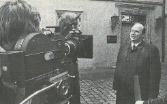

Durchsuchung der angrenzenden Gebäude
Noch in der Nacht von Sonntag, den 10.April 1977, auf Montag rückten gegen 1.30 Uhr circa 250 schwer bewaffnete Polizeibeamte an und durchkämmten das Wohn- und Geschäftshaus „sowie das benachbarte Mehrfamilienhaus in der Von-Koenig-Straße“. Jedoch ohne Erfolg, denn die vermutete konspirative Wohnung konnte nicht gefunden werden. Die umliegende Bevölkerung empörte sich über das Vorgehen der Polizisten, die bewaffnet in die Wohnungen eingedrungen seien und nur kurz erklärt haben, um was es eigentlich gehe. Die Wohnungen seien, laut einem Anlieger, nicht einmal richtig durchsucht worden.

In den folgenden Tagen richtete sich eine BKA-Sonderkommission im Sachsenheimer Rathaus ein, für die in großer Eile Räumlichkeiten gefunden und eingerichtet werden mussten, und sammelten innerhalb weniger Tage rund 450 Hinweise über die Terroristen (von denen nur wenige den Ermittlern weiterhelfen konnten). Aufgrund der Osterferien war anfangs die Telefonzentrale nicht besetzt, doch es konnte schnell eine Rathaus-Beschäftigte ausfindig gemacht werden, die einsprang.

Während dieser Zeit war Sachsenheim zudem interessant für die nationale aber auch die internationale Presse. Fernsehteams und Rundfunk-Journalisten baten den damaligen Bürgermeister Karl-Heinz Lüth um Interviews um ein Stimmungsbild einfangen zu können. Laut Lüth seien die Einwohner Sachsenheims „gewissermaßen darüber geschockt [gewesen], dass Sachsenheim plötzlich täglich im Mittelpunkt der Fahndungsaktion und an erster Stelle in den Medien stand“, hätten sich aber „hervorragend verhalten“. Bürgermeister und Kommune unterstützen die Polizei damals kostenlos und dafür wurde Lüth später vom BKA mit einer Verdienstmedaille ausgezeichnet. Jedoch hatte das negative Folgen für den Bürgermeister und seine Familie, die aufgrund einer Bombendrohung ihr Zuhause verlassen mussten und unter Polizeischutz kamen, bis sich die Drohung als Fehlalarm herausstellte. Herr Lüth selbst beschrieb die damalige Situation als „unangenehm“ und gab zu, dass er „ein mulmiges Gefühl“ hatte, „einen Revolver habe [er jedoch] nicht getragen.

Die RAF hatte auch teilweise Ursprünge im Großraum Vaihingen. Mehrere der RAF Terroristen stammen aus dem größeren Umkreis. (Monika Helbig: in Flein geboren, bei Heilbronn. Silke Maier-Witt: in Nagold geboren. Angelika Speitel: in Stuttgart geboren, in Kanzlei in Stuttgart gearbeitet. Willy Peter Scholl: in Stuttgart-Vaihingen geboren. Stefan Wisniewski: in Freudenstadt geboren. Eva Haule: in Tübingen geboren). Auch der Anwalt Klaus Croissant, dessen Kanzlei fest in die Arbeit der RAF involviert war, stammt aus Kirchheim unter Teck.
Hans-Martin Schleyer studierte in Heidelberg Jura, war zeitweise Vorstandsmittglied in der Daimler AG mit Sitz in Stuttgart. Beigesetzt ist er ebenfalls im Umkreis, nämlich in Stuttgart Sillenbuch.
Die Daimler AG war ebenfalls in die Krise involviert. So war der damalige Vorstandsvorsit-zende Joachim Zahn Mitglied der großen Lage. Auch die Landesregierung mit Sitz in Stuttgart war durch Hans Filbinger, damaliger Ministerpräsident und Mitglied der großen Lage unmittel-bar vom Konflikt betroffen.
Stuttgart ist zudem Herr der Gräber von Andreas Baader und Gudrun Ensslin, die auf die Anordnung des damals amtierenden Bürgermeisters Erwin Rommel in Stuttgart bestatten wurden.